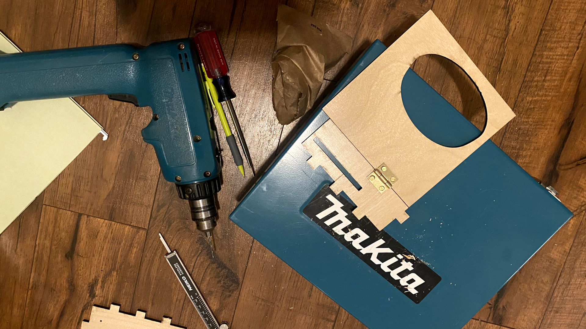

For my final project, I created a seasonal recipe box for 4x6" index-card sized recipes to keep on my kitchen counter. will be used in my kitchen for storing and accumulating recipes for favorite dishes. More than the digital equivalent, the recipe card box will enable simple, distraction-free, hands-free, sharing, contribution and reference during cooking. For this assignment, I created a box for winter recipes. After this class, I plan to creating recipe boxes for the rest of the seasons: Spring, Summer, Fall. My hope is that this recipe box becomes a family heirloom that gets passed down to future generations.
Box dimensions:
Width: 7"; Height: 5.6", Depth: 5.5"
Digital Fabrication techniques used
1. Rhino: Designed the construction of the box
2. Laser-cutting & Engraving: Engraved the decorative elements and cut out the construction pieces of the box as well as the recipe section dividers.
3. CNC Milling: Engraved and cut out our family's signature "logo."
4. Incorporating Stock Parts: Drilled in the hinge that opens and closes the box, and added the magnet to secure the box support bar to the bottom of the top lid.
Design features
I decided to keep the front of the box minimalist. My original plan included a latch but I didn't think it was necessary from a functional point of view. I also thought that aesthetically, it would pull too much focus away from the subtlety of the text and the icon.
The entire bottom panel of the box is an engraving. I liked the contrast between the quiet aesthetic of the front and the drama on the back. The image is an engraving of the art created by Isabelle Arsenault for the book Once upon a Northern Light, written by Jean E. Pendziwol. The book is a loving homage to nature during winter.
For the other seasonal recipe boxes I create, I plan to continue the pattern of engraving an artwork that represents that season.
Inside the box, you'll see a few recipes I recently handwrote on 4x6 index cards as well as laser-cut section dividers using discarded matboard and cardboard.
On the inside of the top lid is our family name, Bass, that my partner handwrote and I engraved using the CNC Mill. At the bottom of the lid is the support bar that is used to prop the lid open. It is securely fastened using a magnet.
How to use this box
1. Open the lid and sift through the recipes to find the one you want to cook.
2. Pull out the recipe, then take the support bar and hook it vertically to the bottom lip of the top lid and the top lip of the bottom container to prop the lid open.
3. Turn the box around 180 degrees. Prop the recipe onto the ledge that juts out from the top surface of the lid.
4. While you cook, let the wintry illustration on the back subtley remind you of the meal's seasonality.
Process
Step 1: Designing the box
Tools:
- Rhino
- Laser-cutter (Mill)
- Quarter-inch plywood (30x20)
My original plan was to parametrically design the box, but after sharing my proposal with Junchao during office hours, he advised me that Grasshopper might be overkill for the simplicity of my geometry. He suggested that it might be easier to construct the shapes in Rhino. So I decided to do just that.
Other than referencing the size dimensions and number of box joints of the Etsy boxthat had initially inspired my project, I designed the pieces in Rhino from scratch.
The design process was fairly simple and straightforward.
1. I started a new Rhino file and, for the sake of simplicity, I set the unit to inches to match the unit settings of the laser cutter.
2. I then measured the thickness of the quarter inch plywood that I bought from the Mill. I'm glad I did this because the thickness was actually .2 inches instead of .25.
3. I used that measurement to size the box joints (length and width of fingers and gaps) in my construction pieces.
4. The box pieces were designed using basic Rhino commands: A combination of the rectangle tool, trim, join, copy, distance, and mirror commands.
5. I laid out all the pieces that I would need and organized them, including all the measurements, using layers and labels.
Testing fit
Since the crux of my project was a completed box, the most important step to get right was the fit of the box joints, so that's what I focused on first. I expected to take several tries before I landed on the perfect fit between all the pieces (not too tight and not too loose).
I define "Perfect fit" as pieces that interlock and don't fall apart with a light shaking.
I ran a series of tests to figure out the width of the kerf (the amount of material removed by the laser in a cut) and subsquently the measurement of the cut lines for the box joints.
The only variable I adjusted in this test was the width of the box joint fingers. I left the width of the gaps the same throughout the experiment at .5 inches, which was the thickness of my plywood material.
To conserve as much material as possible, I trimmed a tiny section of the box and duplicated those pieces to quickly make my test cuts at various widths.
The perfect fit turned out to be somewhere in between .51 and .52 inches for the width of the fingers. This meant that the kerf was around 0.014-0.015 mm.
So I offset the cut lines by the with of the kerf (0.014"), which set the width of all the fingers at .514". I made that update to all the fingers of my pieces.
But wait, there's more!
I also extended the length of the fingers by .010" beyond the thickness of the material, which was 0.2"? Why? Because I didn't like the aesthetic of the burnt edges in the final joints.

By making the fingers just a bit longer, I knew that I could sand down the burnt edges flush so that the color of the wood stays relatively uniform in the final box.
Visualizing fit
I created a 3d model of the box fit together using the 2d pieces that I had measured and designed as another layer of testing to ensure my pieces actually fit together the way I wanted them to.
I'm glad that I didn't skip this step and go straight to cutting. Constructing the 3d model of the box in Rhino highlighted additional misalignment and sizing issues with my original measurements, which I then corrected in my 2d geometries.
The 3d model also helped me visualize the final product and helped me decide the placement of various elements, including the recipe ledge on the cover and the location of the seasonal icon.
It was also much easier for me to design the measurements of the support bar using the 3d model. I did this by opening the lid of the model at roughly the angle that would make for comfortable recipe reading.
I then used the arc tool (start, end, point on arc) to create the outside arc that intersected a quarter of an inch into the front panel of the bottom box and the front panel of the top lid.
I used the arc tool to create the inside arc of the support bar and then joined the pieces together using the line tool. I then extruded the shape and used boolean difference to cut out the areas that overlapped with the box.
Step 2: Laser-cutting
Tools:
- Laser-cutter
- Quarter-inch plywood (30x18)
Adding the engraved elements to my design
I exported my design from Rhino as a .dxf file and imported it into Illustrator, making sure that the scale in the import dialog was set to 1:1 ratio. I sized my Illustrator artboard to the size of my plywood material.
After the pieces were laid out on the artboard, minimizing the space in between the pieces to conserve as much material, I started to think about the design of the seasonal icon and illustration.
I found the jpg of the illustration online, copied and pasted it into Illustrator, and sized it to the dimension of the back panel of the box. The illustration was overlaid on top of the outline of the piece, which was set to 0.001pt stroke to signal cutting and not engraving.
I traced an icon of a snowflake that I had found online in Figma (since it is ironically much more intuitive to draw vector illustrations in Figma than in Adobe illustrator is), exported it as an svg file and then imported it into the file with my soon-to-be-laser-cut pieces in Illustrator.
I positioned the icon in the center of the top surface of the lid on a separate layer titled "Engraving".
Laser cut settings
The settings that I used to cut my pieces on .2inch thick plywood are: 3 speed, 100 power, and 10 frequency. These settings are written on the cheatsheat at the Mill for cutting through 1/4" wood.
I set the Job type as combined since I was both cutting and engraving. I set the Raster speed to 30 and the power to 80 to get as deep an engraving of the illustration and the seasonal icon.
Troubleshooting
My first laser-cut run-through was only 80% successful since the laser didn't cut through some parts of my pieces all the way through. I think it was because my plywood board was slightly bent or some parts were thicker than other parts.
I simply re-laid and re-cut those pieces on a different section of the material, and that seemed to do the trick. I know that Sherry, one of my classmates, changed the vector speed to 2 instead of 3 with a lot of success. I'm definitely going to try that next time.
The parts fit!
Step 3: Assembling the box
Step 3a: Sanding
Tools:
- Sandpaper (medium grit)
After the pieces were cut, and before they were to be glued together, I wet some paper towel and cleaned the soot off the surfaces of the cut plywood. I then sanded down all the burnt edges of the box joints that would be visible once they were pieced together.
I sanded down each piece one by one by vigorously srubbing its edges against the sandpaper (80 grit, grade Medium), which was laid flat on a table. It was much easier to get the black off using this method than the inverse, which was holding the sandpaper in my hand and rubbing the edges.

With the first method, I could apply way more pressure to get the burnt edges off faster. I could also sand multiple edges at one time.
A lot of vigorous sanding was done.
Step 3b: Gluing
Tools:
- Titebond Original Wood Glue
- Small paintbrush (for applying wood glue)
- Irwin Quick-grip clamps
After sanding down the burnt edges, it was time to glue the pieces together.
I applied a generous amount of glue to the box joints and piece by piece, constructed the box.
Once the pieces were glued together, I used the clamps to apply pressure. The instructions on the label suggest adding pressure for 30 minutes after gluing before light use.
Step 3c: Varnishing
Tools:
- Sanding block (150 grit)
- Polycrylic Protective Finish (Matte)
- High-quality synthetic bristle brush (for applying polycrylic)
A thin coat of varnish adds a layer of protection to the wood and can help prevent scratches and scruffs during use. It also brings out the natural beauty of the material.
I got a small container of a water-based finish, since it dries faster than its oil-based counterpart and is safer to use. And since it was going to be used in the home, it didn't need to be ultra heat or water-resistant.
I followed the instructions on the label:
- I lightly sanded all the surfaces of my pieces using 150 grit sanding block.
- I opened the can and poured some into a plastic cup and stirred its contents with my brush.
- I applied a thin layer of the varnish on each surface of my box, making sure there weren't any bubbles.
- I waited two hours after the first round of varnish. Then I lightly sanded the surfaces again before applying the final layer of varnish.
- I broke up the task into two rounds, first the exterior of the box and then the interior of the box. The box was dry and ready to use after around 3 hours.
Done! There is a verty subtle deepening of color of the grain after varnishing.
Step 3d: Attaching the hinge
Tools:
- Non-removable pin hinges (Gold) with 8 1/2" screws with accompanying nuts (for strength and durability)
- Cordless drill with 3/32" drill bit
- Pencil, pen or marker
- Ruler or Calipers
This was probably the most nerve-wrecking step of my project since: 1. I never drilled anything before, 2. There was immense pressure to do it correctly the first time because screwing up (no pun intended) meant I would have to recut my pieces and do all of the above steps all over again. 🤯
I got my partner Mike to help me with this step since he has some experience operating a drill.
We did a test round of drilling the hole and screwing in the hinge on two scrap pieces of plywood. That gave us enough confidence to do it on the actual pieces.
Here are the rough steps:
- Figure out where you want to drill in the hinges. I marked the center of the panel with a pencil and then eyballed the ideal position of each hinge will be placed 1 inch away from each edge.
- Starting with the top lid, I positioned the hinge an inch away from the edge and marked its placement with a pencil. I did the same for the other end.
- I then carefully positioned the top half of the hinge onto the place that I marked on the lid's back surface. I used a pencil to carefully mark the center point of the two circular gaps in the hinge where the screws would go. I did the same for the second hinge on the other end.
- Once I marked the points where I would drill, I positioned the lid on the table with its back surface facing up, and held it steady with my left hand while I drilled in the holes.
- Once the holes were made, I screwed in the screws using a flat screw driver. And then I tightened the nuts on the other end by hand.
- Now that the top half of the hinges were screwed in, it was easier to pinpoint the placement of the screws on the box for the bottom half of the hinge. I simply aligned the top lid with the bottom box. While my partner had his hand on the top lid, gently applying pressure to keep the box steady, I held the bottom half of the hinge flush against the surface and used a white marker (so that it shows up on the engraved art) to mark the drill holes.
- Once the markings were made, I drilled in the holes the same way I did it for the top lid, and screwed in the screws and nuts.
It opens and closes!

Step 4: Finishing touches
Step 4a: Securing the support bar
Tools & Materials:
- 25mm Extra Heavy-Duty Utility Knife
- Ruler
- Gauder Metal Tape Adhesive for magnets
- Master Magnets, Roll-N-Cut Magnetic Tape Refill
- Pencil with eraser
Once the materials were acquired, attaching the magnet and the metal tape was a fairy simple process.
- I used a pencil to mark the optimal position of the support bar inside the top lid.
- I used a ruler and the utility knife to cut a thin rectangular sliver of the magnet tape, sizing it approximately so that it fit within the bounds of the support bar.
- After the magnet piece was cut out, I attached it to the surface of the metal tape. With the magnet held together with the metal, I used the knife to cut the metal tape around the perimeter of the magnet.
- I then removed the film covering the adhesive side of both the magnet and the metal tape, and attached one to one side of the support bar and the other to the marked location inside the top lid.
Step 4b: Milling our Family name
Tools & Materials:
- Bantam CNC Mill
- 1/64" End Mill
- Copper-Clad Laminate Sheets
- Double-sided tape
- Scannable mobile app
I thought that having some sort of family "crest" would add a nice personal touch to this recipe box and align with my hope that this is something that stays within our family for a long time.
I asked my partner to handwrite our last name on a sheet of paper. His handwriting is so charming in its crookedness and idiosyncrasy, I thought it would balance out the serif-typeface and minimalism of the box design.
I scanned his handwriting using the Scannable mobile app, saved it as an image and air dropped it to my laptop.
I brought the image into Adobe Illustrator and used "Image trace" to vectorize it.
I created a rectangle around the vectorized name and put each in a separate layer. The rectangle is in the cut layer and "Bass" is in the engraving layer.
I exported both separately as svg files and imported them to the Bantam Tools desktop app.
Bantam Tools settings:
I positioned the cut plate at the top of the lid interior. You'll see the name when you open the lid and understand its connection to the recipes inside.
Step 4c: Laser-cut and engraving recipe section dividers
Tools:
- Epilog laser cutter 30x20
- Recycled cardboard and mat boards
- Adobe Illustrator
- Rhino
As a final touch, I decided to laser cut the recipe section dividers. I created the shape in Rhino, exported it as a .dxf file and imported it into Adobe Illustrator.
I added the labels and used scrap cardboard and matboard from the Mill to engrave and cut out the shapes
Laser-cut settings:
I followed the settings posted on the cheatsheat at the Mill for c-flute cardboard: 50 frequency, 20 speed, 50 power.
For the labels, I used the raster setting of 40 speed, and 80 power.
Special Thanks
Thank you, Junchao! For your feedback, support, and ideas for my final project during office hours. You da best!
Thanks to Tomomi for the serendipity of being there at the laser cutter when I was getting started. You were so helpful in reminding me about the steps in the process.
Thanks to the staff at Greenwood hardware store for answering my novice questions and pointing me toward the right materials to finish my box!